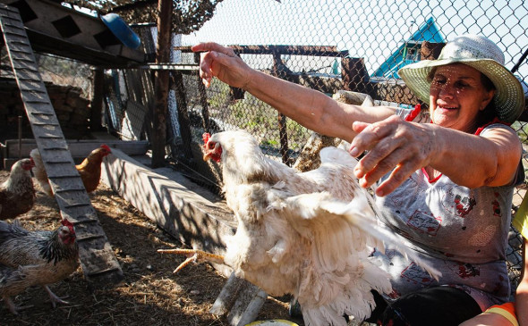
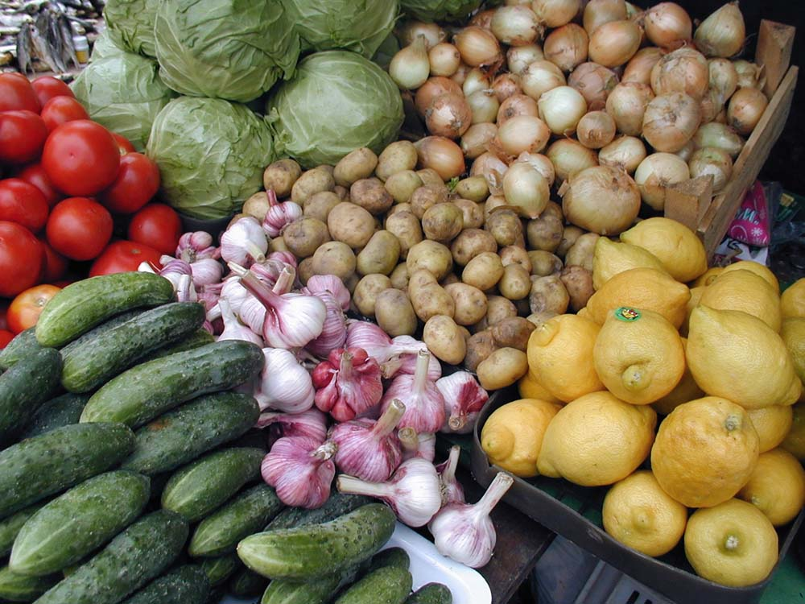
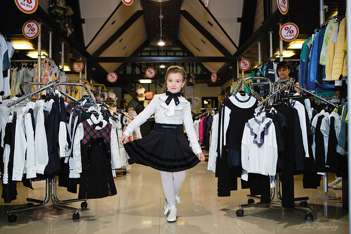
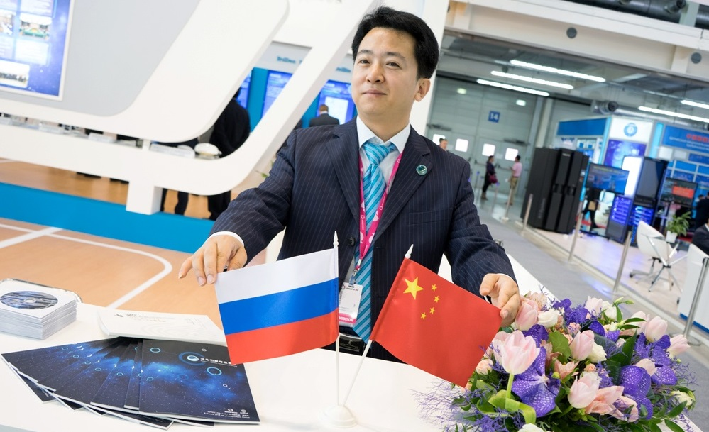

Тема дня
Письмо, которое пришло на днях ныне живущему в Татарстане выпускнику средней школы села Старая Белогорка, что в Оренбургской области, было тревожным: «В нашей школе сложилась такая ситуация, когда учителей в селе просто уже нет. Учитель математики проживает в п. Новосергиевка, английский язык ведет учитель из села Барабановка… Вы неоднократно оказывали благотворительную помощь нашей школе, за что мы Вам искренне благодарны. Еще раз просим Вас помочь…».
Новости
19.09.2022
Упростят процедуру закрытия юрлица
Для малых и средних предприятий введут новый порядок ликвидации юрлица. Он станет быстрее и проще того, который действует сейчас, ожидается, что пользоваться им можно будет уже с середины 2023 года.
13.09.2022
С 2023 появится новый обязательный отчет о зарплате
Объединение Пенсионного фонда и ФСС вносит коррективы в сдачу отчетности. В список добавятся ежемесячные отчеты о зарплате.
10.09.2022

Что нужно знать о маркировке рекламы
1 сентября 2022 года в России вступает в силу закон № 347-ФЗ о поправках в Федеральный закон «О рекламе». Основные форматы интернет-рекламы в рунете нужно будет маркировать и передавать информацию в Единый реестр интернет-рекламы (ЕРИР).
08.09.2022
Айдар Метшин заявил, что самозанятые как отраслевая система себя оправдали
Депутат Госдумы считает, что для этой категории граждан нужно продолжать создавать условия для их заинтересованности в работе. Самозанятые как отраслевая система себя оправдали, считает депутат Госдумы России Айдар Метшин. По его словам, теперь нужно заниматься надстройкой и шлифованием существующих недочётов.
07.09.2022

Бизнес попросил изменить закон о разведении кур и гусей на дачах
По данным «Коммерсанта», в Росптицесоюзе опасаются, что в текущем виде закон грозит распространением птичьего гриппа и попаданием вируса на крупные предприятия.
04.09.2022

Теперь бизнес сможет выплачивать штраф со скидкой 50%
Если юрлицу или ИП назначили штраф за административное нарушение, выявленное в ходе госконтроля, то заплатить его можно будет со скидкой в 50%. Такой закон подписал Президент РФ Владимир Путин (федеральный закон от 14.07.2022 № 290-ФЗ).
03.09.2022

Утвердили форму согласия на раскрытие налоговой тайны
С 1 августа Налоговая инспекция вправе предоставлять сведения о налогоплательщике. Теперь эти данные не являются налоговой тайной. Но требуется согласие самого налогоплательщика.
31.08.2022

ОПР создается в целях создания цивилизованной конкурентной сферы, поддержки местных товаропроизводителей в части налаживания связей с конечным потребителем, предприятиями розничной торговли и общественного питания в части минимизации их издержек, связанных с закупкой продовольствия в широком ассортименте, легализации всех товарных потоков оптового и розничного звена. В работе совещания принял участие президент Союза рынков и торговых предприятий РТ Н.Н. Сулейманов. Отметим, что общественная организация во главе с ее руководителем не раз поднимала этот важнейший для продовольственной безопасности страны вопрос, который неоднократно становился предметом обсуждения на конференциях Союза...
17.08.2022
Эксперты высшей школы экономики: бизнес стал чаще открывать и реже ликвидировать компании
Эксперты ВШЭ впервые за шесть лет отметили рост компаний при одновременном сокращении числа ликвидированных юридических лиц. В количественном выражении пока больше «закрытий», чем «открытий» — бизнес страдает от санкций или уходит в тень в условиях экономической неопределенности. ВШЭ делится данными 2021 года — число новых организаций составило 234,2 тысячи компаний против 225,6 тысячи в 2020 году.
12.08.2022

Первый класс: в офлайн-магазинах Татарстана упал спрос на школьную форму
Покупатели школьной формы переориентировались с офлайн магазинов на маркетплейсы. На некоторых из них продажи выросли на 77-97%. Местные производители в этом году столкнулись с дефицитом тканей, что ранее везли из Турции.
09.08.2022
Владельцы ТЦ просят упростить въезд в Россию бизнесменам из дружественных стран
Владельцы российских торгцентров, которые рассчитывают привлечь ритейлеров из Азии, Африки и Латинской Америки, попросили МИД России отменить визы для бизнесменов из этих стран. В ТЦ рассчитываю, что мера поможет им заполнить 3 млн м2 площадей, высвобождающихся после ухода западных брендов.
28.07.2022
В Самаре самозанятым помогут опытные бизнесмены
До первого августа в Самарской области принимают заявки от самозанятых на получение новой меры поддержки. В регионе запустили программу "Бизнес-наставник". Самозанятых будут консультировать опытные бизнесмены, которые успешно ведут свое дело много лет и получают с него основной доход.
10.07.2022
Опрос: более 80% россиян поддерживают возрождение советских брендов
«Необходимым возрождать советские бренды на фоне ухода иностранных компаний из России считают 83% российских граждан. Речь идет в том числе о таких брендах, как «Москвич», «Волга» и «Победа» (автомобили), а также «Орск» (холодильники) и «Кама» (велосипеды)», — говорится в исследовании.
09.07.2022

Российских предпринимателей обучат ведению бизнеса с Китаем
Товарооборот между Россией и Китаем по итогам первого квартала 2022 года вырос на 28,7%. Однако, по словам преподавателей-китаистов, наши предприниматели все чаще сталкиваются с тем, что классическая схема ведения дел в этой стране не работает. Причина - специфика местной культуры и особенности мировоззрения ее представителей.
09.07.2022
Как уральская IT-компания помогает бизнесу перейти на отечественное ПО
Чтобы заместить иностранный софт, компания "СКБ Контур" предлагает бизнесу продукты собственной разработки - от сервиса видеоконференцсвязи (ВКС) до удаленного доступа к рабочему столу. В том числе их можно интегрировать в действующую информационную систему предприятия.